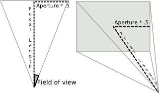

| On this page |
Using the stereo camera rig
-
Press ⇥ Tab with your mouse in the network editor.
-
Type Stereo Camera and choose it from the menu.
-
Select the newly created camera node from the camera menu in the top right corner of the viewport.
Note
You will see four entries, one for the right camera, one for the left camera, one for the center camera, and one for the whole stereoscopic rig. Choosing the stereoscopic rig node from that menu will initiate stereoscopic viewing in the viewport.
-
Lock the view and the camera by clicking the
 Lock Camera button on the right toolbar. This allows you to manipulate the viewpoint and direction while maintaining the stereoscopic composition.
Lock Camera button on the right toolbar. This allows you to manipulate the viewpoint and direction while maintaining the stereoscopic composition.Note
You will need a pair of standard red-cyan filter eye-wear, also known as anaglyph glasses, to perceive the stereo depth.
Tip
You can hide the viewport gnomons that obscure the view by selecting the appropriate checkboxes in the viewport display options.
Render the stereoscopic scene
-
Create a mantra render node and choose the stereoscopic camera rig for the Camera parameter.
-
Press the Render button to get an anaglyph preview in MPlay.
You can save the anaglyph by choosing File ▸ Preview. You could also choose File ▸ Save Frame or File ▸ Save Sequence to separately save pairs of images which can be used in non-anaglyph stereo displays.
To save the left channel, choose the C plane in the Scope parameter of the Save dialog. To save the right channel, choose the C2 plane.
Note
The Output Picture parameter specifies the file name and a sequence of image pairs. These pairs can be used in other stereo displays or can be read using the  File COP and fed into the
File COP and fed into the  Anaglyph COP node to create an anaglyph image sequence.
Anaglyph COP node to create an anaglyph image sequence.
You can open a sequence of stereo images in MPlay by clicking File ▸ Open Stereo Pair. MPlay combines the pair into a single anaglyph image and displays it as a frame.
Sub-cameras of the stereo rig
The global variable EYE determines which sub-camera of the stereo rig should be used. The value of the EYE variable can be set by clicking Edit ▸ Stereo Eye in the main menu, or by using hscript, "set -g EYE = stereo" followed by "varchange EYE".
The value of the EYE is respected by the viewer which will select appropriate sub-camera depending on the variable value, if the original camera specified in the menu to look through was a stereo camera rig node.
The render output driver will also use the appropriate camera, since the Stereo Camera Rig specifies different Render Camera list, 'vm_cameralist', depending on the $EYE.
The $EYE variable can be also used in the parameters, for example to specify the output or input image file.
Note
Since the Edit ▸ Stereo Eye menu is a radio button selection, additional values of the EYE variable can be added manually. The new values should correspond to the possible values of the subcamtag spare parameter on sub-camera within the Stereo Camera Rig. The viewport will find the correct sub-camera to look through when $EYE specifies a custom value.
Transforming sub-cameras
There is a spare parameter called viewxformpath which allows you to specify the node whose transform should be changed when the viewport is locked. This is useful for sub-cameras (and sub-lights) within a synchronized HDA.
Normally, sub-cameras cannot be updated because their parameters are locked. If a sub-camera has a viewxformpath parameter that specifies the top-level node, the transform parameters of the top-level node will be modified to maintain the view in the viewport when the viewport is locked to and looking through the sub-camera and you translate or rotate the view. The top-level HDA should have a representative camera specified, so that Houdini treats it as a camera itself.
For example, the stereo camera rig has four sub-cameras, each of which has the viewxformpath parameter that specifies the top level node. You can look through any of these sub-cameras and adjust the whole rig’s transform so that the viewport’s view corresponds to the sub-camera’s view, such as the left camera.
For more information on adding spare parameters, see the Edit Parameter Interface help.
Advanced Rendering
Houdini, mantra, and MPlay provide basic support for the stereo rigs and images, which are geared towards the easy first steps. For example, it is easy to render from mantra to MPlay using default settings, but it may be harder to display secondary image planes, such as depth. Similarly, while rendering the stereo camera view to a pair of image files may be simple, it may not be suitable for more advanced rendering.
In more advanced cases, create a custom render node digital output. It should contain two mantra nodes, one explicitly for the left sub-camera and the other for the right sub-camera of the stereo main camera rig. This will make it easier to tweak various settings, output planes, and output files separately for the left and right channels.
You can also build your own ROP HDA, which allows further customization of the render passes by setting various variables and camera parameter values in the Pre-Render and Post-Render scripts.
Parameters
Transform
Transform Order
The left menu chooses the order in which transforms are applied (for example, scale, then rotate, then translate). This can change the position and orientation of the object, in the same way that going a block and turning east takes you to a different place than turning east and then going a block.
The right menu chooses the order in which to rotate around the X, Y, and Z axes. Certain orders can make character joint transforms easier to use, depending on the character.
Translate
Translation along XYZ axes.
Rotate
Degrees rotation about XYZ axes.
Pivot
Local origin of the object. See also setting the pivot point .
Modify Pre-Transform
This menu contains options for manipulating the pre-transform values. The pre-transform is an internal transform that is applied prior to the regular transform parameters. This allows you to change the frame of reference for the translate, rotate, scale parameter values below without changing the overall transform.
Clean Transform
This reverts the translate, rotate, scale parameters to their default values while maintaining the same overall transform.
Clean Translates
This sets the translate parameter to (0, 0, 0) while maintaining the same overall transform.
Clean Rotates
This sets the rotate parameter to (0, 0, 0) while maintaining the same overall transform.
Clean Scales
This sets the scale parameter to (1, 1, 1) while maintaining the same overall transform.
Extract Pre-transform
This removes the pre-transform by setting the translate, rotate, and scale parameters in order to maintain the same overall transform. Note that if there were shears in the pre-transform, it can not be completely removed.
Reset Pre-transform
This completely removes the pre-transform without changing any parameters. This will change the overall transform of the object if there are any non-default values in the translate, rotate, and scale parameters.
Keep Position When Parenting
When the object is re-parented, maintain its current world position by changing the object’s transform parameters.
Child Compensation
When the object is being transformed, maintain the current world transforms of its children by changing their transform parameters.
Enable Constraints
Enable Constraints Network on the object.
Constraints
Path to a CHOP Constraints Network. See also creating constraints.
Tip
You can you use the Constraints drop down button to activate one of the Constraints Shelf Tool. If you do so, the first pick session is filled automatically by nodes selected in the parameter panel.
Note
Lookat and Follow Path parameters on object nodes are deprecated in favor of  Look At and
Look At and  Follow Path constraints.
The parameters are only hidden for now and you can set their visibitily if you do edit the node’s parameter interface.
Follow Path constraints.
The parameters are only hidden for now and you can set their visibitily if you do edit the node’s parameter interface.
Stereo
Zero Parallax Setting
Controls the distance to the ZPS plane measured from the camera.
The ZPS is a set of points in space whose left and right projections overlap at the same spot in the displayed image. The ZPS plane coincides with the viewing screen. Objects between the camera and the ZPS plane appear to the viewer in front of the viewing screen, and objects behind the ZPS plane appear to the viewer behind the viewing screen.
ZPS at Infinity
If this checkbox is turned on, the ZPS value is treated as if it is infinity. The points at infinity will appear to lie on the screen, and all other ones will appear between the viewer and the screen. This is equivalent of making the optical axes of the left and right cameras parallel.
Interaxial Distance
Controls the separation distance between the left and right cameras and is directly visualized as part of the camera prop in the viewport. Increasing this parameter will push both Left and Right camera away from the center.
The Interaxial Distance is the separation between the left and right cameras. Large values produce a more pronounced stereoscopic effect with enhanced sense of depth, while small values reduce the sense of depth. A value of zero produces non-stereoscopic imagery.
Left/Right Interaxial Adjustment
Allows you to fine tune the left and right camera lenses. These parameters contribute to the overall Interaxial Distance for the stereo camera.
Show Interaxial Control
Displays the arrows near the camera lenses. Selecting and moving these objects increases or decreases the interaxial distance of the stereo camera. However, you will not see the interaxial controls if you are looking through the camera. To view and move the controls in the viewport,  unlock the camera and switch to the object level. The controls act like
unlock the camera and switch to the object level. The controls act like  Null objects.
Null objects.

Note
To modify the interaxial distance while looking through the camera, drag the Interaxial Distance parameter into the viewport and use the hudslider. To remove the slider, simply click  and turn off the Display checkbox.
and turn off the Display checkbox.
Enable Toe-In
Turning on this checkbox will enter the camera into a 'toe-in' mode, where the additional rotation of Left/Right sub-cameras is allowed. In this mode, it is not possible to visualize the ZPS plane, because it is no longer a planar. It becomes a curved surface.
Note
Once this is turned on, you should set the ZPS to infinity by turning on the ZPS at Infinity parameter. This will yield a standard toe-in stereo camera rig, with rotation controlled by Left/Right rotation parameters.
Left/Right Rotation
Determine the sub-camera horizontal rotations.
Left/Right Pivot
Determines the pivot point around which the cameras rotate.
Show Pivot Control
Displays the toe-in manipulators near for the camera in the viewport. You can select the arrows to position the pivot, and the rotator to adjust the rotation angle for each camera.
Show ZPS Marker and Screen Surround
Displays a frame corresponding to the physical screen when viewing the stereo images.
Screen surround is the left, right, top, and bottom edges of the viewing screen. This visualization helps position the objects in the scene relatively to the camera and the screen surround. Objects between the camera and screen surround visualization will appear to pop out of the screen towards the viewer.

Note
The screen frame can be selected and moved in the viewport to adjust the ZPS distance. Additionally, a ZPS arrow marker is displayed so that it can be used for adjustment when viewing through the stereo camera by selecting and dragging it along the z-axis.
Show Frustum
Displays several frustums.
Center
Displays frustum for the center camera.
Left
Displays frustum for the left camera.
Right
Displays frustum for the right camera.
Left and Right
Displays frustum for superimposed left and right frustums.
Intersection of Left and Right
Defines the region of space whose points are seen in both left and right images. Objects in this region will maintain the stereoscopic appearance, which has a tendency to break down for objects close the to left and right edges of the screen surround. For example, outside of this frustum.
Note
These frustums are delimited by the near and far clipping planes. These are independent parameters on the rig, but it is often customary to tie their values to the screen surround. For example, at 1.5% of the width away from the ZPS plane. This can be achieved in the Stereo Camera rig with appropriate channel references and multipliers in the near and far clipping plane parameters.
Translucent Frustum
Displays the frustum as translucent polygons rather than the wireframe outline. This is convenient for estimating which objects are inside or outside the frustum, and which objects partially cross the boundary.
Tip
When the translucent visualization is on, the frustum polygons will make it harder to select the encompassed object in the viewport. Temporarily toggle the viewer into wireframe (hotkey w) for selection and then again pressing w to go back to shaded mode in which translucent cage is displayed again.
Frustum Alpha
Allows the adjustment of the frustum transparency.
View
Icon scale
Scales the viewport geometry. This parameter is only for display purposes.
Resolution
The output resolution in pixels. Standard presets are available via the pull down menu to the right of the parameter.
Pixel aspect ratio
The pixel aspect ratio of the output image.
Focal Length
Camera focal length (zoom).
Focal Units
The units used for the focal length.
Aperture
Width of the visible field.

Near Clipping
Position of near clipping plane.
Far Clipping
Position of far clipping plane.
Screen Window X/Y
Define the center of the window during the rendering process.
Screen Window Size
Scale for expanding the cropped area specified by the Crop parameters.
Left/Right/Bottom/Top Crop
Defines the cropping area in terms of the camera’s viewing area margins.
Sampling
Shutter Time
The portion of the frame interval that the camera shutter is
open. Used to determine motion blur. [0,1]
Focus Distance
The lens focal distance and distance from the camera at which objects will be in focus. This is only used when rendering using depth of field. Objects outside this distance will be blurred.
F-Stop
Lens fstop. This is only used when rendering using depth of field. Determines blurriness of depth of field effects.
Bokeh
Filter kernel used in depth of field rendering.
radial
Use a gaussian filter kernel (highest quality)
box
Use a box filter kernal
null
Do not filter
Subnet
Display
Whether or not this object is displayed in the viewport and rendered. Turn on the checkbox to have Houdini use this parameter, then set the value to 0 to hide the object in the viewport and not render it, or 1 to show and render the object. If the checkbox is off, Houdini ignores the value.
Output Transform
The object inside the subnet from which to get the subnet’s output transform.
Visible Children
Space separated list of objects inside the subnet to display. Use * to make all objects visible (the default). You can use wildcards and bundle references to specify objects.
This parameter lets you:
-
Quickly filter the visible objects based on an existing naming convention, for example
*_proxy. -
Control visibility of objects inside a locked digital assets where the display flags are not available.
Otherwise, in a normal subnet you can simply go into the subnet and set the display flag on objects.
Viewport Selecting Enabled
Object is capable of being picked in viewport.
Select Script
Script to run when the object is picked in the viewport. See select scripts.
Cache Object Transform
Caches object transforms once Houdini calculates them. This is
especially useful for objects whose world space position is
expensive to calculate (such as  Sticky objects),
and objects at the end of long parenting chains (such as
Sticky objects),
and objects at the end of long parenting chains (such as
 Bones). This option is turned on by default for Sticky and
Bone objects.
Bones). This option is turned on by default for Sticky and
Bone objects.
See the OBJ Caching section of the Houdini Preferences window for how to control the size of the object transform cache.